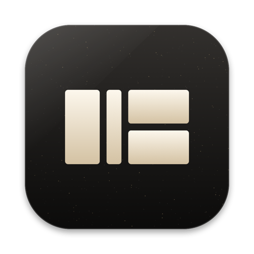

Everything it does, in plain words.
SAVISUL is one native Mac app that replaces a pile of small utilities. No account and no subscription.
The notch, awake.
At rest the island is a thin strip around the camera. Hover it and it opens into four tabs. Events open it on their own and close it again: a finished agent, a charger, headphones, a muted microphone, a download.
Every app gets its own volume.
Your Mac has one volume for everything. SAVISUL adds a second: each app gets its own level, output and ceiling.
Windows land where you meant.
⌥Tab shows apps with live window previews. Drag a window to an edge and it takes a half or a corner.
It remembers. It searches. It counts.
History keeps up to a thousand items: text, links, images, files and colors.
Select anything. Press ⌃⌥A.
Text, a link, an image or files in any app: SAVISUL reads what you selected and offers only what fits it.
When this happens, do that.
Automations watch for something on your Mac and do the steps for you, even with the panel closed.
The same notch on every web page.
The extension puts a notch at the top of any site.
Your Mac, in one panel.
⌃⌥S opens a panel for the machine itself.
Stays on your Mac.
No account, no analytics, no ads, no telemetry.
Install in a minute.
Open source, with credit where it’s due.
SAVISUL is published under the Apache License 2.0.
You may
You must
Based on SAVISUL by The SAVISUL Authors · Apache License 2.0

Put your notch to work.
Questions or ideas? mouldloft@gmail.com